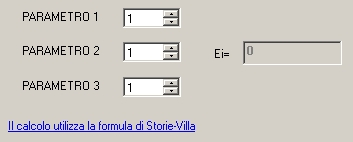

Per calcolare il valore di un indicatore l'utente sceglie dalla tabella il valore dei parametri e li inserisce nel riquadro corrispondente. Il calcolo avviene automaticamente ad ogni inserimento dei valori.